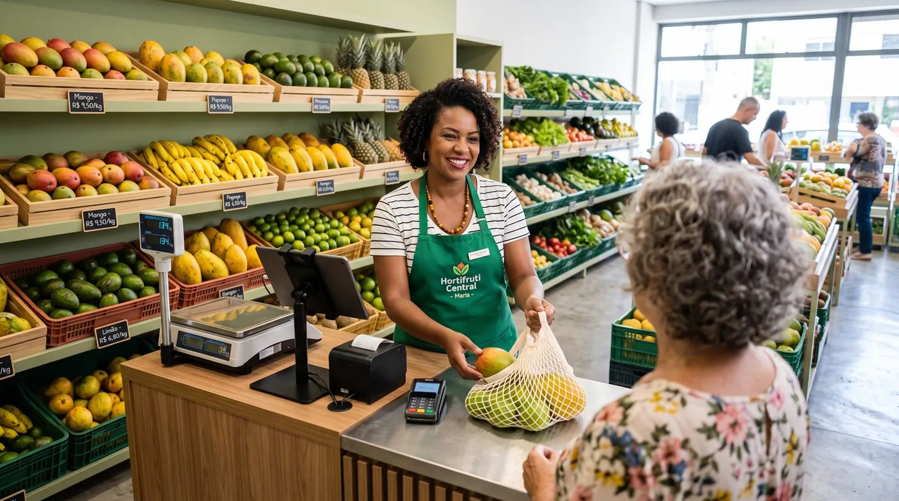

Sistema PDV para hortifruti: venda por peso, perdas e validade em 2026
Escolher um sistema PDV para hortifruti não é a mesma coisa que escolher um caixa para qualquer loja. Quem vende frutas, verduras e legumes lida todo dia com balança, preço que muda da noite para o dia, mercadoria que estraga rápido e reposição constante. Este guia mostra, em linguagem direta, o que um bom sistema para hortifruti precisa ter, venda por peso, controle de perdas, modo offline para a feira, e como escolher sem cair em armadilhas.

Por que o hortifruti pede um PDV diferente
Um sacolão, uma quitanda ou uma banca de frutas tem uma operação que pouca gente de fora enxerga. Diferente de uma loja de roupas ou de uma papelaria, onde o produto tem código de barras, preço fixo e validade longa, o hortifruti vive de mercadoria viva: o tomate de hoje não é o tomate de amanhã, o preço do maço de couve muda conforme a feira da Ceasa e parte do estoque vira perda se não girar rápido.
Por isso, um PDV genérico costuma travar a operação. Ou ele não conversa com a balança, e o caixa precisa digitar valor a valor (com fila e erro garantidos), ou não tem como registrar perda, e você nunca sabe quanto realmente perdeu de berinjela na semana. Um bom sistema para hortifruti resolve quatro dores específicas: pesagem, perecibilidade, preço volátil e venda fora do balcão. Vamos a cada uma.
Venda por peso: a balança é o coração do caixa
No hortifruti, a maior parte do que se vende sai por quilo. Se o caixa for lento, a fila cresce no horário de pico e o cliente desiste. Por isso, a integração com a balança é o primeiro item inegociável de um sistema PDV para hortifruti.
Os dois jeitos de pesar
Na prática, existem dois modelos que um bom sistema deve suportar:
- Balança que imprime etiqueta: o produto é pesado na seção, a balança gera uma etiqueta com código de barras contendo o peso e o valor, e o caixa apenas lê o código. Rápido para lojas com muito movimento e seções separadas.
- Balança integrada ao PDV: a balança fica no próprio caixa e envia o peso direto para a tela de venda. O cliente pesa, o sistema multiplica peso × preço por quilo e fecha a venda. Ideal para sacolão e banca, onde tudo acontece no mesmo ponto.
Em ambos os casos, o objetivo é o mesmo: acabar com a digitação manual de valor, que gera erro, divergência de caixa e lentidão. O sistema também deve permitir produtos vendidos por unidade (um abacaxi, um pé de alface) e por peso, sem misturar as contas.
Regra de ouro do hortifruti: se o produto é pesado, o caixa não digita preço, a balança e o sistema fazem a conta.
Perdas, validade e reposição diária
O segundo grande inimigo do hortifruti é a perda. Frutas e verduras têm validade curta e, sem controle, a mercadoria estraga na prateleira antes de virar venda. O dinheiro que escorre por aí raramente aparece de forma clara, e é exatamente isso que um bom sistema ajuda a enxergar.
Um sistema PDV para hortifruti bem usado permite:
- Registrar perdas (o que estragou, foi descartado ou consumido internamente), para você medir o desperdício real por produto e por período.
- Controlar entradas e saídas de estoque, com baixa automática a cada venda, para saber o que precisa ser reposto na próxima ida à Ceasa.
- Acompanhar a validade dos itens que você decide controlar, para priorizar a venda do que chega primeiro e remarcar ou promover o que está perto de vencer.
- Planejar a reposição diária com base no que de fato girou, comprar mais do que vende e menos do que sobra.
O controle de perdas não é burocracia: é onde mora boa parte da margem do negócio. Quem registra desperdício consegue agir antes do prejuízo, com uma promoção no fim do dia ou ajustando a compra da semana seguinte.
Preços que mudam todo dia
No varejo de hortifruti, o preço é móvel por natureza. O custo na Ceasa oscila com a safra, o clima e a oferta, e o que você pagou caro ontem pode estar barato amanhã. Um caixa que dificulta a troca de preço vira um problema diário.
Por isso, busque um sistema em que atualizar preços seja rápido e em lote: trocar o valor do quilo de banana, do maço de cheiro-verde ou da caixa de morango em poucos toques, sem precisar reimprimir um catálogo inteiro ou mexer em cada item um a um. Quando o PDV é em nuvem e se atualiza sozinho, a etiqueta da balança, o preço do caixa e o relatório ficam sempre coerentes, sem aquela divergência clássica entre o que está na prateleira e o que aparece no fechamento.
Sazonalidade: o ano inteiro em movimento
Manga no verão, tangerina no inverno, morango em uma época, caqui em outra. A sazonalidade é parte do jogo no hortifruti, e o sistema precisa acompanhar esse vaivém. Com bons relatórios de vendas, você enxerga quais produtos giram em cada estação, antecipa a demanda e evita comprar fora de hora. É a diferença entre surfar a safra e ficar com a mercadoria parada.
Feira e ambulante: o modo offline é essencial
Muita gente do ramo não vende só no balcão fixo. Tem a barraca na feira livre, a tenda no fim de semana, a venda como ambulante. Nesses lugares, a internet é instável ou simplesmente não existe, e um caixa que depende de conexão para funcionar é inútil ali.
Aqui entra um recurso que separa os sistemas sérios dos improvisados: o modo offline com sincronização automática. O sistema continua registrando vendas mesmo sem sinal e, quando a internet volta, envia tudo para a nuvem sozinho. Assim, a feira não para, o controle não se perde e, no fim do dia, os números batem com a banca fixa.
Funções essenciais de um sistema para hortifruti
Reunindo tudo, um bom sistema PDV para hortifruti precisa entregar:
- Venda por peso com balança, por etiqueta ou integrada ao caixa, mais venda por unidade.
- Controle de perdas e de estoque, com baixa automática e registro de desperdício.
- Troca rápida de preços, idealmente em lote e em nuvem.
- Modo offline com sincronização, para feira, barraca e quedas de internet no balcão.
- Relatórios de vendas por produto e por período, para ler a sazonalidade e planejar a compra.
- Controle de fiado (crédito de clientes), comum no comércio de bairro, para registrar quem leva agora e paga depois sem perder o controle.
- Pronto para a nota fiscal eletrônica, quando o seu negócio precisar emitir.
- Hardware flexível: rodar em computador, tablet ou celular, sem prender você a um único aparelho caro.
Os melhores sistemas PDV para hortifruti (2026)
Abaixo, uma leitura prática do mercado, com foco no que importa para frutas e verduras: venda por peso, controle de perdas, modo offline e custo real.
digabloPos
O digabloPos é um PDV em nuvem moderno que cobre justamente as dores do hortifruti. O plano base é gratuito para sempre (sem prazo, sem cartão de crédito) e fica pronto em poucos minutos. Faz venda por peso com balança, tem modo offline com sincronização automática para a feira, controle de perdas e estoque, controle de fiado para o cliente de bairro e está pronto para a nota fiscal eletrônica. Os módulos opcionais você ativa só quando precisar.
👍 Pontos fortes
- Plano base grátis para sempre, sem compromisso
- Venda por peso integrada à balança
- Modo offline + sincronização (ideal para feira/ambulante)
- Controle de perdas e de estoque
- Módulos sob demanda
- Controle de fiado (crédito de clientes)
- Pronto para a nota fiscal eletrônica
👎 A verificar
- Marca mais nova que ERPs nacionais tradicionais
- Confirme a compatibilidade com o modelo da sua balança
- Alguns módulos avançados são pagos
Nex (Nextar)
Popular entre pequenos comércios, permite vendas fracionadas (kg/grama) e configuração de balança com etiqueta, além de um plano gratuito com recursos básicos. É uma opção sólida para quem está começando, embora recursos mais avançados e suporte ágil tendam a ficar nos planos pagos.
PDV Flex
Sistema voltado a hortifruti com integração de balanças, controle de validade e lote e configuração de produtos por peso ou unidade. Bom conjunto de funções para perecíveis, porém trabalha por mensalidade, o que pesa mais para quem está no começo.
Lexos
Automação comercial integrada às principais balanças do mercado, com pesagem no caixa e venda por quilo ou grama. É uma opção robusta para lojas estabelecidas, mas trabalha por assinatura e tende a ser mais do que uma banca pequena precisa no início.
Quer testar sem gastar nada?
O plano base do nosso nº 1 é grátis para sempre, fica pronto em poucos minutos e não pede cartão de crédito.
Criar meu caixa grátisTabela comparativa
| Critério | digabloPos | Nex | PDV Flex | Lexos |
|---|---|---|---|---|
| Plano grátis para sempre | Sim | Sim | Não | Não |
| Venda por peso / balança | Sim | Sim | Sim | Sim |
| Modo offline + sync | Sim | Parcial | Parcial | Parcial |
| Controle de perdas/estoque | Sim | Sim | Sim | Sim |
| Controle de fiado | Sim | Parcial | Parcial | Parcial |
| Pronto para nota fiscal eletrônica | Sim | Sim | Sim | Sim |
Comparação informativa elaborada em junho de 2026 com base em informações públicas dos fornecedores. Recursos, planos e integrações com balança mudam com frequência, confirme tudo nos sites oficiais antes de decidir.
Como escolher o seu PDV para hortifruti (checklist)
- Teste a balança primeiro. Confirme se o sistema integra com o modelo que você tem (ou pretende ter) e se a venda por peso é realmente rápida no caixa.
- Exija controle de perdas e estoque. Sem isso, você não enxerga o desperdício de perecíveis.
- Verifique a troca de preços. No hortifruti, mudar valores precisa ser questão de segundos, de preferência em lote.
- Exija modo offline real com sincronização, indispensável para feira e ambulante.
- Confira fiado e relatórios. Crédito de cliente e leitura de sazonalidade fazem diferença no bairro.
- Some o custo de 12 meses (software + balança + eventual certificado) antes de assinar, não só o preço de etiqueta.
Perguntas frequentes
O que é um sistema PDV para hortifruti?
É um caixa pensado para quem vende frutas, verduras e legumes: vende por peso com balança, controla perdas e validade dos perecíveis, deixa mudar preços rápido e funciona mesmo sem internet. Difere de um PDV comum justamente por dar conta da pesagem e da alta perecibilidade do sacolão.
Como funciona a venda por peso no caixa?
De dois jeitos: a balança imprime uma etiqueta com código de barras (lida no caixa) ou fica integrada ao PDV, enviando o peso direto para a tela. Em ambos, o sistema multiplica peso por preço por quilo, sem digitação manual e sem fila.
O sistema ajuda a reduzir perdas?
Sim. Registrando entradas, baixas, validade e perdas, ele mostra o que está perto de vencer e quanto você desperdiça por produto. Assim dá para agir antes do prejuízo, com promoção, remarcação ou redistribuição da mercadoria.
Dá para usar na feira ou como ambulante, sem internet?
Sim, se o sistema tiver modo offline real. Ele continua vendendo sem sinal e sincroniza quando a internet volta. Para barraca e tenda, esse recurso é essencial, a fila não pode parar porque o sinal caiu.
Preciso emitir nota fiscal no hortifruti?
Depende do seu enquadramento e do seu estado; o MEI costuma ter regras próprias. Escolha um sistema pronto para a nota fiscal eletrônica e confirme a obrigatoriedade e os prazos com a SEFAZ do seu estado e com o seu contador.
Pronto para organizar seu caixa de hortifruti?
Monte seu caixa gratuito em poucos minutos, com venda por peso, controle de perdas e modo offline para a feira. Sem compromisso e sem cartão de crédito.
Começar grátis